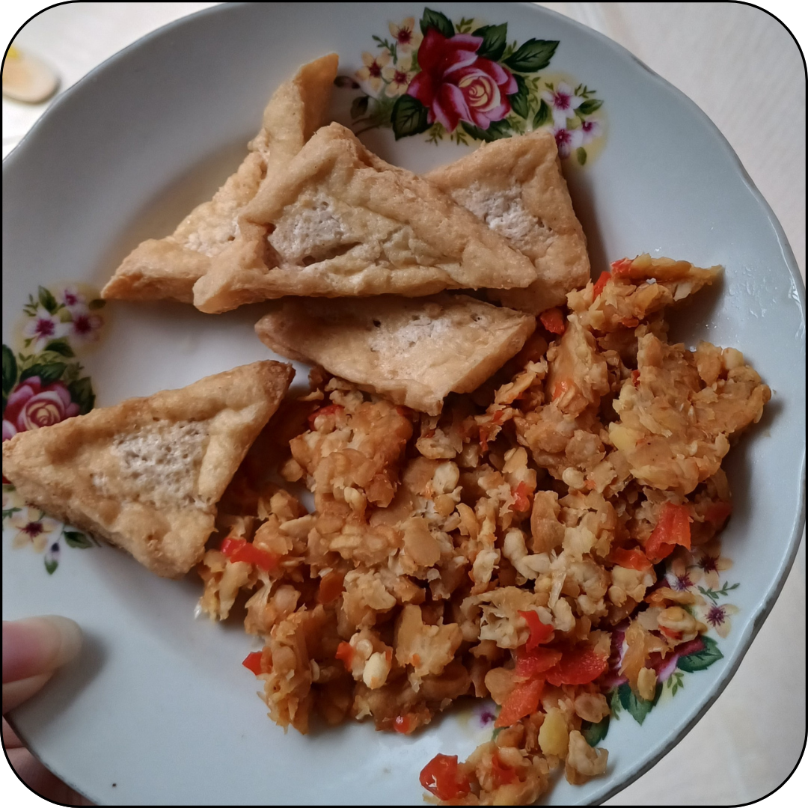

Sambal Tempe

Bahan:
Tempe
Cabe Rawit
Bawang Putih
Garam
Cara Membuat:
Rendam tempe dengan garam. Kemudian goreng sampai matang
Ulek bawang putih dan cabe rawit, tambahkan garam sedikit
Masukkan tempe yang sudah matang sambil di ulek